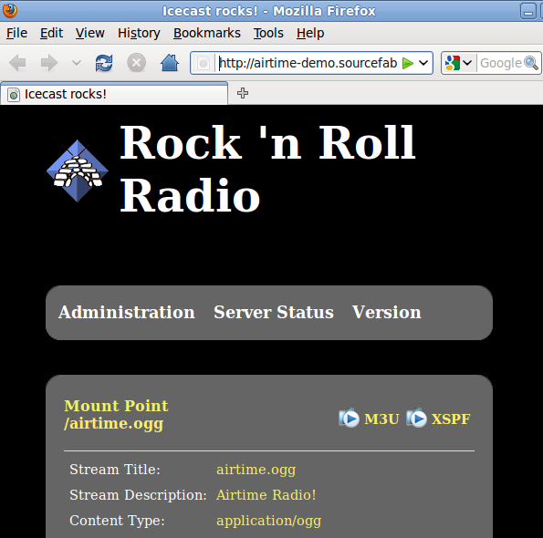

Modifying the LibreTime interface
The LibreTime administration interface, as a web application, is fully customizable using the same methods that you might use to modify a website. For instance, you may wish to increase certain font sizes or change the colours in the LibreTime interface to better suit staff users with impaired vision. To do this, open one of the CSS files in the /public/css/ directory under the LibreTime DocumentRoot directory in an editor such as nano:
sudo nano /usr/share/airtime/public/css/styles.cssTo change the background colour of the administration interface from dark gray to white, the background: property of the body tag could be changed to #ffffff as follows:
body {
font-size: 62.5%;
font-family:Arial, Helvetica, sans-serif;
background: #ffffff;
margin: 0;
padding: 0;
}Save the file with Ctrl+O, then refresh your browser to see the change to the interface background colour.
Any custom changes that you make to the administration interface should be backed up before upgrading LibreTime to a newer version, otherwise they could be overwritten. If you have made improvements that you think might be useful to other LibreTime users, please contact LibreTime and tell us about them.
Modifying the LibreTime Radio Page
The background of the mini-site that appears when you visit the server's domain in your web browser can be changed by modifying the page's CSS file, located at /usr/share/airtime/php/airtime_mvc/public/css/radio-page/radio-page.css.
html {
background: url("img/background-testing-3.jpg") no-repeat center center fixed;
-webkit-background-size: cover;
-moz-background-size: cover;
-o-background-size: cover;
background-size: cover;
overflow-y: auto;
}Place the new background image in the /usr/share/airtime/public/css/radio-page/img/ folder and change the background: entry's URL to point to the new image. The new image should be at least 1280 x 720 in pixel size to avoid being blurry.
Modifying the Icecast interface
If you have installed Icecast, in the directory /etc/icecast2/web/ you will find several XSLT and other files which are used to generate the Icecast web interface. If you are familiar with HTML you should be able to modify these pages, as they are well commented. You do have to be careful with syntax, because something as simple as a missing bracket can cause the Icecast web interface to break down.
For example, you could change the status.xsl page:
sudo nano /etc/icecast2/web/status.xslModifying the status.xsl page is a good place to start, because this is the default page that site visitors see when they browse port 8000 on your Icecast server. The most obvious change to make in the XSLT pages is the content of the <title> and <h2> tags, to announce the name of your station. You can also modify the style.css file in this directory to change colour and layout options.
After saving the file with Ctrl+O, refresh your web browser, and the new look should now be visible.
